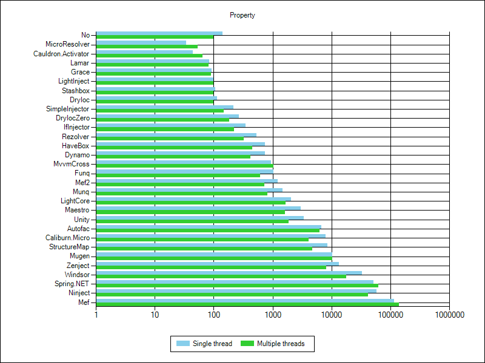

Ioc Performance - Results
Overview
| Basic | Advanced | Prepare | |||||||||||
|---|---|---|---|---|---|---|---|---|---|---|---|---|---|
| Container | Singleton | Transient | Combined | Complex | Property | Generics | IEnumerable | Conditional | Child Container | Asp Net Core | Interception With Proxy | Prepare And Register | Prepare And Register And Simple Resolve |
| No | 43 48 | 46 57 | 81 77 | 76 82 | 141 98 | 53 67 | 195 124 | 58 57 | 543 324 | 439 310 | 1 | 1 | |
| abioc 0.7.0 | 43 43 | 39 49 | 64 63 | 60 77 | 914 431 | 6048 | 5631 | ||||||
| Autofac 4.8.1 | 594 639 | 630 537 | 1980 1766 | 6417 6534 | 6660 6301 | 1774 1414 | 7448 6011 | 1175 1137 | 67161* 35810 | 10851 9262 | 20654 10711 | 276 | 288 |
| Caliburn.Micro 1.5.2 | 395 229 | 472 272 | 1390 771 | 5888 3145 | 7819 4036 | 5951 3160 | 48 | 49 | |||||
| Catel 5.6.0 | 258 301 | 3981 4475 | 8873 9712 | 20584 22965 | 8820 9452 | 3939 4247 | 17604 | 18036 | |||||
| Cauldron.Activator 3.0.32 | 34 41 | 44 60 | 75 84 | 175 130 | 44 64 | 65 72 | 285 193 | 612 399 | 0 | 0 | |||
| DryIoc 3.0.2 | 31 41 | 44 61 | 56 79 | 66 70 | 115 98 | 49 79 | 253 170 | 58 65 | 870 538 | 787 469 | 53 | 246 | |
| DryIocZero 4.0.0 | 98 76 | 75 76 | 86 94 | 206 144 | 270 182 | 78 78 | 268 183 | 333 224 | 0 | 1 | |||
| Dynamo 3.0.2 | 85 68 | 93 83 | 207 139 | 621 348 | 733 417 | 16854 | 16871 | ||||||
| fFastInjector 1.0.1 | 69 53 | 116 92 | 242 166 | 558 319 | 7283 | 7401 | |||||||
| Funq 1.0.0.0 | 109 81 | 133 106 | 366 245 | 1075 592 | 1043 606 | 7 | 7 | ||||||
| Grace 6.4.1 | 23 38 | 34 60 | 45 72 | 56 63 | 92 89 | 44 77 | 244 162 | 48 58 | 43497 23765 | 439 326 | 794 469 | 137 | 858 |
| Griffin 1.1.9 | 274 175 | 291 195 | 628 386 | 1758 988 | 9131 | 9201 | |||||||
| HaveBox 2.0.0 | 38 45 | 47 61 | 64 80 | 97 87 | 732 452 | 1647 954 | 677 429 | 51547 | 51582 | ||||
| IfInjector 0.8.1 | 78 59 | 116 86 | 138 116 | 188 130 | 350 220 | 134 113 | 1326 | 1968 | |||||
| Lamar 1.1.1 | 63 56 | 79 76 | 104 101 | 119 101 | 83 81 | 121 101 | 517 317 | 809 478 | 1804 | 325983* | |||
| LightCore 1.5.1 | 173 168 | 2281 1254 | 25409 35011 | 144838* 198335* | 2046 1670 | 15474 17370 | 35033 26530 | 172 | 188 | ||||
| LightInject 5.1.8 | 26 37 | 31 58 | 47 76 | 63 62 | 100 98 | 41 72 | 238 161 | 328 202 | 2380 1682 | 1301 731 | 178 | 800 | |
| LinFu 2.3.0.41559 | 3037 1644 | 16419 10338 | 41746 25356 | 108167* 62903* | 94 | 330 | |||||||
| Maestro 1.5.4 | 329 237 | 389 265 | 912 563 | 2831 1536 | 3002 1619 | 660 415 | 2943 1631 | 902 533 | 5998 3270 | 174 | 785 | ||
| Mef 4.0.0.0 | 20118 10987 | 32123 19262 | 54379 50162 | 107807* 131680* | 113888* 137699* | 129008* 109517* | 89816* 110240* | 14 | 2119 | ||||
| Mef2 1.0.33.0 | 207 136 | 220 153 | 321 214 | 609 352 | 1229 721 | 266 179 | 1303 737 | 5079 | 6485 | ||||
| MicroResolver 2.3.5 | 26 40 | 33 59 | 50 69 | 89 79 | 34 54 | 251 175 | 26713 | 65064 | |||||
| MicroSliver 2.1.6 | 202 227 | 753 520 | 2395 1643 | 6677 5764 | 11 | 15 | |||||||
| Microsoft Extensions DependencyInjection 2.1.1 | 77 64 | 108 90 | 135 119 | 187 131 | 129 110 | 389 238 | 942 600 | 20 | 27 | ||||
| Mugen 3.5.1 | 476 460 | 708 798 | 2063 2775 | 7717 10160 | 10338 10368 | 55300 57507 | 5407 7695 | 1638 2153 | 573933* 376419* | 14189 29322 | 428 | 1757 | |
| Munq 3.1.6 | 85 68 | 119 98 | 472 303 | 1561 857 | 1469 818 | 10195 | 10276 | ||||||
| MvvmCross 6.1.2 | 229 252 | 922 992 | 2572 2732 | 7434 7995 | 948 1027 | 6198 6536 | 4088 2418 | 9 | 12 | ||||
| Ninject 3.3.4 | 2613 1890 | 7584 6263 | 22328 15373 | 61634* 45643 | 58388 41062 | 24518 15220 | 61256* 42380 | 19949 11790 | 435571000* 365734939* | 17204 14491 | 864750* | 828996* | |
| Rezolver 1.3.4 | 165 116 | 181 136 | 246 184 | 378 235 | 534 325 | 239 172 | 8946 4642 | 8179875* 4415881* | 9143 6857 | 10680 | 16192 | ||
| SimpleInjector 4.3.0 | 65 56 | 84 70 | 92 89 | 119 96 | 218 148 | 70 77 | 742 407 | 78 72 | 7165 4037 | 623 | 3106 | ||
| Spring.NET 2.0.1 | 890 891 | 9550 13180 | 26494 30451 | 69669* 77039* | 51391 62415* | 42185 54271 | 22250 | 22311 | |||||
| Stashbox 2.6.1 | 30 38 | 36 61 | 51 77 | 64 70 | 106 99 | 48 72 | 257 170 | 52 58 | 317873* 219028* | 676 1042 | 848 497 | 60 | 510 |
| StructureMap 4.7.0 | 994 557 | 1159 709 | 3203 1795 | 7992 4478 | 8417 4696 | 2223 1315 | 8352 4592 | 3196473* 1749431* | 44306 25318 | 7541 4091 | 1374 | 7347 | |
| Unity 5.8.6 | 270 162 | 376 249 | 1108 634 | 3327 1835 | 3332 1881 | 1144 661 | 4049 2263 | 834 467 | 5863 9406 | 14369 13913 | 64 | 66 | |
| Windsor 4.1.0 | 426 286 | 1776 973 | 5787 3108 | 16675 8985 | 32879 17795 | 14091 7517 | 14856 8174 | 205541* 108275* | 13683 7150 | 2847 | 2882 | ||
| Zenject 6.4.0 | 437 549 | 1286 932 | 3610 2987 | 9963 6737 | 13240 8144 | 6796 4149 | 13243 8863 | 2923 2307 | 21211 11956 | 137 | 146 | ||
Charts
Singleton

Transient

Combined

Complex
Property
Generics

IEnumerable
Conditional

Child Container

Asp Net Core

Interception With Proxy

Prepare And Register

Prepare And Register And Simple Resolve